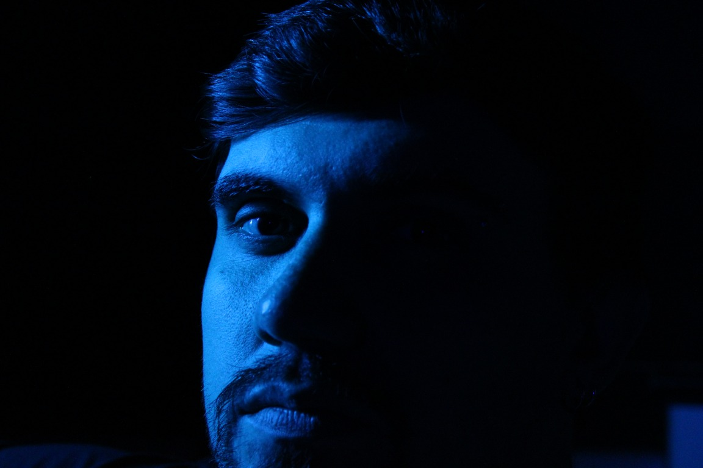

Design que dá forma à sua marca
Sou Pedro Tragante, designer gráfico. Crio identidades visuais atemporais a partir de formas geométricas suaves e conexões contínuas — traduzindo a essência de cada marca em uma linguagem única.
8 Anos · de experiência criativa
Identidade visual, branding e web design com síntese, forma e intenção.
Meus serviços
Ver todos os serviços →Logotipos, sistemas de marca e manuais completos construídos sobre uma síntese visual clara e atemporal.
Aplicações consistentes da marca em todos os pontos de contato, do papelaria ao digital.
Sites institucionais que traduzem a identidade da marca em uma experiência digital coesa.

Identidade, branding, social e motion.
Ver tudo →Procurando alguém para dar vida à sua ideia?
Fale comigo →Projetos selecionados
Ver portfólio completo →


Identidade que os algoritmos reconhecem
Uma marca coesa envia sinais de autoridade que posicionam você nos buscadores e nas respostas da IA.
SEO Visual
↑ Ranking orgânicoConsistência de marca gera backlinks naturais, maior tempo de sessão e taxa de retorno elevada — sinais que o Google interpreta como autoridade e relevância.
AEO Semântico
↑ Presença em IAsConteúdo estruturado em torno da sua identidade facilita que motores de resposta como ChatGPT e Perplexity te citem como referência qualificada.
Autoridade Digital
↑ ConversãoUma marca visual clara torna cada ponto de contato um reforço à sua reputação online — reduzindo custo de aquisição e aumentando a conversão.